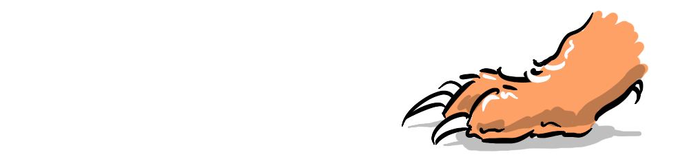

~ the makings of a very negative-sum game ~
In 1957, Leon Festinger published A Theory of Cognitive Dissonance, a groundbreaking study that demonstrated an innate human drive to maintain consistency in our beliefs, attitude and actions. Successive decades of peer-review and replication have revealed a deep human need to perceive ourselves as good.
And yet, in a world of people who perceive themselves as good, there seem to be so many bad actors out there, doing bad things, voting the bad way, and thinking that you're bad - when you're not!
Libtards battle Deplorables, Russians fight Ukrainians, freedom of choice advocates have fiery debates with right to lifers, all following their own moral compass. How do so many people, who are trying to do good, cause so much negativity? Is it simply unresolvable because morality is subjective, and we're all just aiming at different targets in a moral chaos? Or is there something else at play?
I'm going to posit that this has a lot to do with Moral Licensing.
In Sinning Saints and Saintly Sinners: The Paradox of Moral Self-Regulation Sonya Sachdeva and colleagues found that participants who took part in altruistic behaviour at the beginning of the study, were less likely to make virtuous choices when presented with ethical situations later on.

The implication was that the good deed performed earlier gave participants a sense of having earned moral credit, which made them feel less obligated to choose virtuously later on.

This study focused on what I'll call positive moral licensing, where a person consciously or unconsciously justifies bad behaviour with reference to previous good behaviour, like having a donut after a workout or staying up late playing video games after a productive day at work.
Neuroscientist Sam Harris takes this into account when giving to charity, by making regular automatic payments, he hopes to not require reconfirmation of his virtuous choice and so won't morally license bad behaviour later on.
I'm going to propose that there is an important mirror-image to this positive moral licensing, its evil (or even eviler) twin...

A negative corollary of moral licensing is where people use other people's bad behaviour (or rather their perception that others have behaved badly or have bad intentions) to justify their own bad behaviour - implicitly referencing their relative goodness as an excuse to cut moral corners.
"Never trust a cynic; cynics excuse their own bad behaviour by saying everyone does it." - Elon Musk
Musk's somewhat ironic comment, is backed up by another study that focused on people with "aversive" personality traits which include manipulative, psychopathic and exploitative behaviours. These people nevertheless saw themselves as moral, by maintaining beliefs that justified their behaviour.
These "aversive" personalities were often "sensitive to befallen justice" (feeling victimised by others) and cynical about the honesty of others, believing most people were out to harm them or that they were living in a "competitive social jungle", therefore justifying their actions as preemptive or defensive. And this is not limited to the personal realm either, it also plays out in geopolitics.

In the wake of the 9/11 attacks a sense of victimisation and a distrust of the Muslim world, lead to restrictions on civil liberties in the US, with greater powers of surveillance and detention and even torture, and it eventually lead to the US-led coalition's invasion of Iraq, a sovereign nation who had not attacked the US, effectively eschewing the UN security council's protocols for international military intervention. In Theories of International Relations Scott Burchill states:
"With each subsequent terrorist assault, states which consider themselves innocent victims have been emboldened to interfere in each other's internal affairs - even pre-emptively." - Scott Burchill
Negative moral licensing seems, on the face of it, to simply be a zero-sum game. Someone does something bad, and their opponent does something equally bad in retaliation - then they're even, right?

A zero-sum game is not such a bad problem to have, it's neutral by definition, but that's not what we see happen in real life. Instead we see a downward spiral, because, given some other aspects of human psychology, it turns out this is actually a negative-sum game. Next week we will explore why...